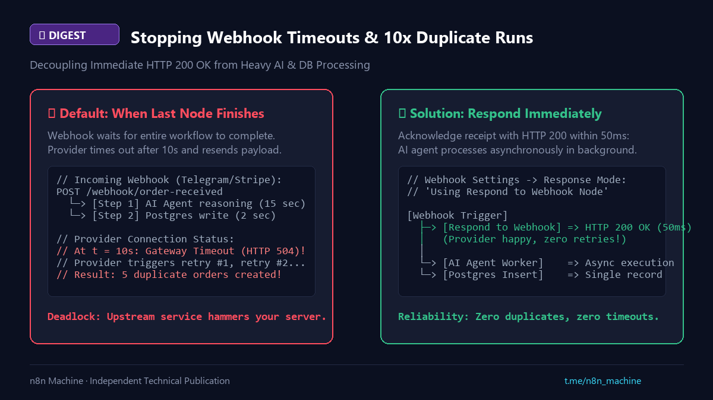

Digest
Stopping Webhook Timeouts & Duplicate Executions
- Published
- Checked against
- docs.n8n.io
- Status
- Corrected, revision 2

Slow webhooks make providers retry, and each retry is a new run.
01Symptom and cause
- Telegram or Stripe sends a webhook, your AI step takes 15 s, and you get 3–5 duplicate runs.
- The default mode waits for the last node; providers give up after 5–10 s and retry.
02Fix
- In the Webhook node set Response Mode to
Using 'Respond to Webhook' Node. - Put Respond to Webhook right after the trigger so HTTP 200 returns at once; the rest runs in the background.
- Store the event id and skip repeats if the provider may still resend.